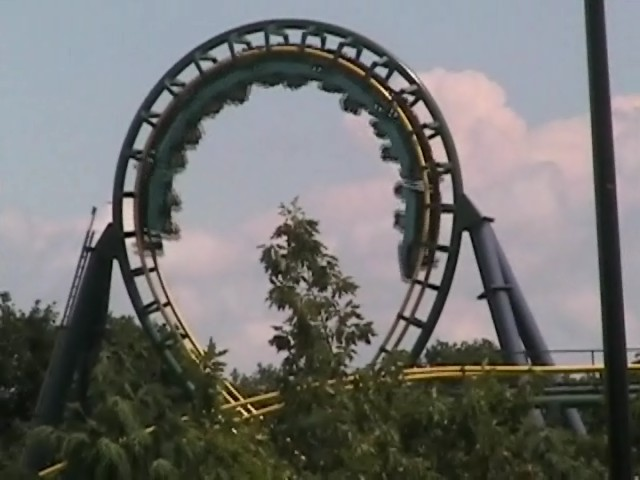

| |
Dragon Fire Review

We're here at Canada's Wonderland. Today's ride we'll be reviewing for you is Dragon Fire. Once you get in the cars and pull down the OTSRs, you're off. You roll down a dip and around a small turn. After this, we then start to climb the lifthill. If we look to our left, we can see all of the wonderful rides that Canada's Wonderland has to offer. If you look to your right, you will get a chance to look at a Canadian Street and see a lot of Canadain Shops. Look up and you'll see Leviathan TOWERING above you. No seriously. From the photos I've seen, Dragon Fire has pretty much become invisible as Leviathan just DOMINATES this ride and makes it its bitch. I know this ride isn't that big and I could tell before Leviathan was built, but DAMN!!!! We then head down the first drop. The first drop gives us a decent amount of speed for just an Arrow Loopscrew (Though it had just rained right before I rode, so that probably made the ride run faster than normal). We have gone down the first drop, and there in the distance lies the vertical loops. All that stands between us is a bunch of straight track. As we continously eat through the straight track, we then start to go through the vertical loops. The first vertical loop we go through is pretty forceful for an Arrow Loopscrew. However, it doesn't kill us. So, we go through a second loop. That ought to do the trick. Nope it just gives us some fun. We then fly up a small hill and into a sort of banked turn. Suprisingly, there's no headbanging here. And then, we head straight into the corkscrews. The corkscrews are fun. We then start to twist up and hit a set of midcourse brakes that slow us down. And sadly, it's powerful. We then go down a small drop before heading through an upward helix which just takes away all the speed we had from that small drop. And yeah. The final brakes are here and it's over. While this ride is just an Arrow Loopscrew and nothing special, it's still a fun ride and I'd definetly recommend it to anyone who doesn't have the credit or if it just has a short line.
6/10
Location: Canada's Wonderland
Opened: 1981
Built by: Arrow
Last Ridden: August 7, 2008
Dragon Fire Photos
Home
|